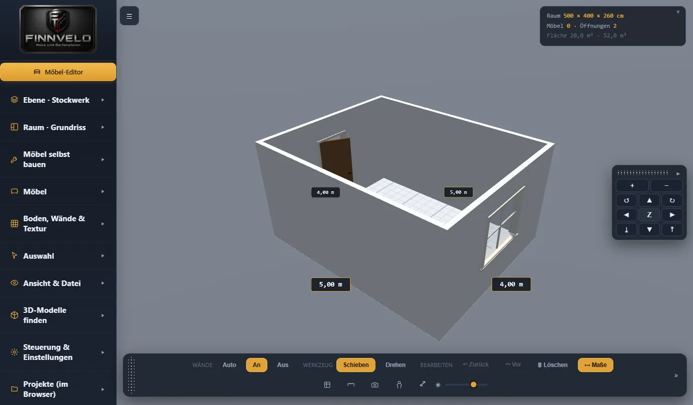

Räume · Möbel · Dach · Garten
Finnvelo Haus und Gartenplaner
Browser · WindowsDer Finnvelo Haus- und Gartenplaner ist ein 3D-Planer für Häuser, Wohnungen und Gärten. Grundrisse werden mit echten Maßen gezeichnet, Etagen und Dach aufgebaut, Möbel aus einem Baukasten zusammengestellt und der Außenbereich gestaltet – anschließend lässt sich das Ergebnis in der Ego-Ansicht durchlaufen. Der Planer läuft als einzelne Datei im Browser, ohne Installation und ohne Internetverbindung.
Beschreibung
Geplant wird Etage für Etage – vom Keller über bis zu fünf Obergeschosse bis ins Dachgeschoss. Grundrisse entstehen im Zeichenmodus mit Innenwänden, Türen und Fenstern; neue Etagen übernehmen die Hausmaße automatisch. Das Dach lässt sich als Sattel-, Walm-, Pult-, Zelt- oder Flachdach anlegen, mit Kniestock, Dachfenstern und sieben Ziegelformen.
Wände und Fassaden werden mit Pinsel, Kacheln und Mustern gestaltet, 31 Fassadentexturen inklusive. Wer es genau wissen will, blendet die Dachkonstruktion mit Sparren und Pfetten ein und erhält eine Stückliste mit Längen und Schnittwinkeln. Jede Änderung wird automatisch gesichert; ein eigenständiges Windows-Programm ist in Arbeit.
Grundriss mit echten Maßen
Räume und Innenwände zeichnen, Türen und Fenster setzen – Etage für Etage, vom Keller bis zum Dach.
Dach und Dachkonstruktion
Fünf Dachformen, Kniestock und Dachfenster – auf Wunsch mit Sparren, Pfetten und Stückliste.
Möbel-Baukasten
127 Möbel aus der Bibliothek, jedes in seine Teile zerlegbar und in Größe und Aufbau anpassbar.
Farben und Materialien
Jedes Möbelteil einzeln einfärben, Wände bemalen oder fliesen – mit Pipette, Lineal und Raster.
Garten gestalten
Beete, Zäune, Hecken, Bäume und Pool rund ums Haus im selben Planer anlegen.
Ego-Ansicht
Durch die geplanten Räume laufen wie in einem Spiel – gesteuert mit Maus und Tastatur.
Eigene Möbel entwerfen
Im Möbel-Editor eigene Stücke bauen und für weitere Projekte speichern.
Automatisch gesichert
Jede Änderung wird gespeichert; benannte Projekte lassen sich jederzeit wieder öffnen.
Oberfläche
Der Planer direkt nach dem ersten Öffnen, mit einem Beispielraum.

Tutorial-Video
Ein Tutorial-Video zum Haus und Gartenplaner wird hier ergänzt, sobald es bereitsteht.
Besondere Vorteile
- Läuft im Browser – ohne Installation und ohne Internet
- Grundrisse und Etagen mit echten Maßen
- Fünf Dachformen samt Dachkonstruktion und Stückliste
- 127 anpassbare Möbel und ein eigener Möbel-Editor
- Jedes Möbelteil einzeln färbbar
- Garten- und Außenflächenplanung
- Ego-Ansicht zum Durchlaufen der Räume
Zielgruppe
Der Haus- und Gartenplaner eignet sich für alle, die vor einem Hausbau, einem Umzug, einer Renovierung oder einer Neugestaltung erst einmal in Ruhe planen möchten – vom einzelnen Zimmer über das ganze Haus bis zum Garten.
Besonders hilfreich ist der Planer, um Möbelmaße vorab zu prüfen, Raumaufteilungen auszuprobieren und Ideen für Einrichtung und Garten sichtbar zu machen, bevor etwas gekauft oder gebaut wird.
Download (Android-App)
Windows-Version
Der Haus und Gartenplaner ist zusätzlich als eigenständiges Windows-Programm geplant. Sobald die erste Installationsdatei bereitsteht, wird sie hier verlinkt.
Zum Download-BereichWeitere Versionen und Patches
Hier können später weitere Versionen, Patchdateien und ältere Installationsdateien ergänzt werden.
Download (PC-Version)
Planer herunterladen
Der Planer ist eine einzelne HTML-Datei: herunterladen und in einem aktuellen Browser öffnen. Er läuft ohne Installation und ohne Internetverbindung. Ein eigenständiges Windows-Programm ist in Arbeit.
Planer herunterladen (HTML-Datei)Hinweis
Alle Bibliotheken sind in die Datei eingebettet. Deshalb ist sie etwas größer – und funktioniert dafür vollständig ohne Internetverbindung.